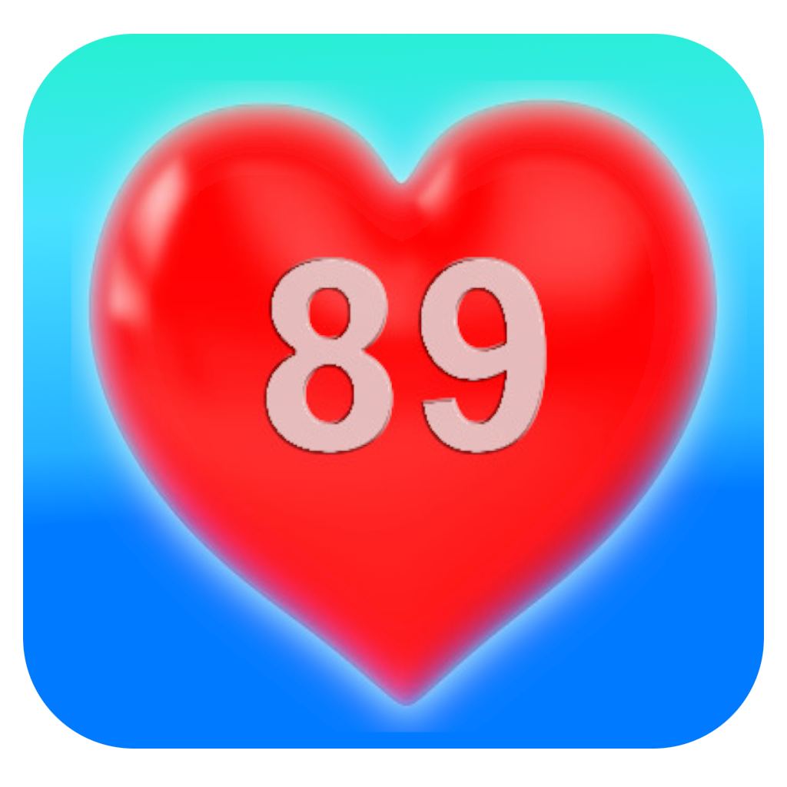

Öpücük mü ? Dislike mi ?
Ekrana giren öğretmene öpücük veya dis gönderin. Kararlarınızda ne kadar tutarlı olursanız, o kadar fazla ek puan alacaksınız. Eğer öğretmen çarparsa bir hakkınız yanar. Toplamda 2 hakkınız var.

Öğretmenler 3 grup
Oyunda ilerledikçe ve puanlar arttıkça yukarından gelen öğretmenler değişmektedir. Oyunun hızı gittikçe artmaktadır. Oyunu bitirebilmek için 3 grup öğretmeni de geçmelisiniz.
Seviye atlayın
Her seçimde 5 puan toplayacaksınız. Puanlarınız arttıkça seviye atlayacaksınız. Toplamda 7 seviye var. 4 seviyede bir ek hak kazanacaksınız.

Kendinize isim seçin
Oyuna ilk başlarken bir isim seçin. En yüksek 10 puan toplayanların isimleri ve oyun performansları puan tablosunda görünecektir.

TAC89
Oyunun amacı öğretmenlerimizi rencide etmek değildir. Okul yıllarında yapamadığımız popülerlik anketini yıllar sonra bir oyun ile yaparken eğlenmek ve aramızdan ayrılan arkadaşlarımızı anmaktır.
Tüm öğretmenlerimize bize verdikleri emeklerden dolayı teşekkür ederken, kaybettiğimiz öğretmenlerimizi saygıyla anıyoruz.